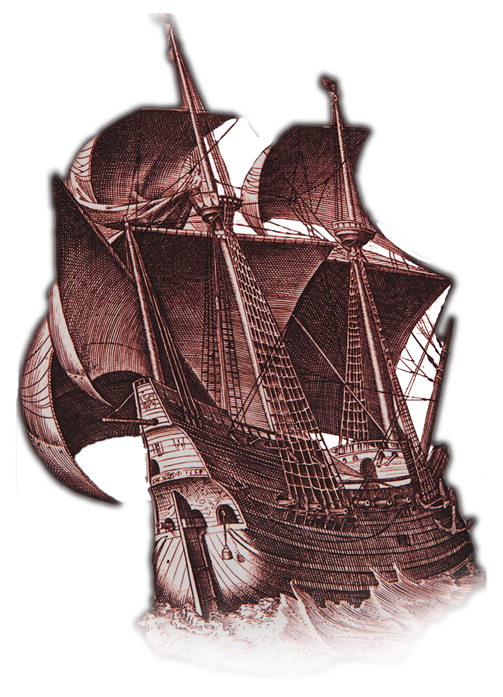

Experience The Voyage
To VoyageDiscover the voyage of the Red Redagon, a privateering vessel which rampaged through the Atlantic for thirteen months. Relive the journey told by the Pilot Thomas Hood of how they plundered, fought, and sailed for riches to bring back to England.
Discover the Archive
To ArchiveDiscover the research that went into reconstructing the tale of the Red Dragon. Learn about the other ccounts of the story from those within and gainst the voyage.
Contributors
Researchers
Gabriel de Avilez Rocha
Eleanor Hubbard
Kara Schultz
David Wheat
Maggie McNulty
Creators
Ben Rodia
Axel Mortimer
Stephen Gross
Su Hnin Pwint